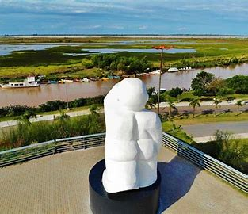
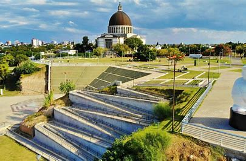
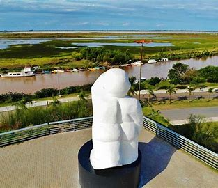
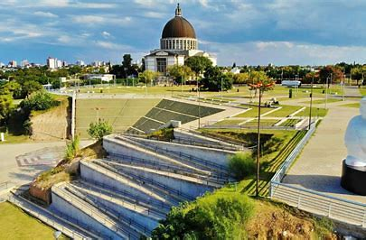
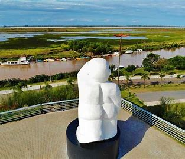
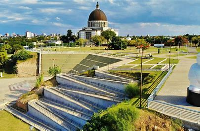
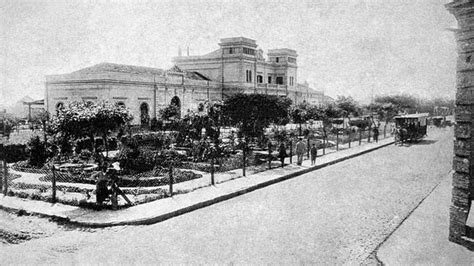

A city rich in history and culture in Buenos Aires Province, Argentina.


San Nicolás de los Arroyos is a city located in the province of Buenos Aires, Argentina, on the banks of the Paraná River. Founded in 1748 by the priest Nicolás del Río, the city has played an important role in the country's history. In its early years, it was a vital commercial center due to its proximity to the river.

San Nicolás has a rich cultural tradition, including festivals, theater, music, and art. One of the most important events is the Festival of the Lord of the Miracle, celebrated annually in honor of the religious image of San Nicolás.
The cuisine of San Nicolás de los Arroyos is influenced by traditional Argentine cooking. The most typical dishes include asado, empanadas, and pasteles. In addition, fish from the Paraná River are a local specialty.